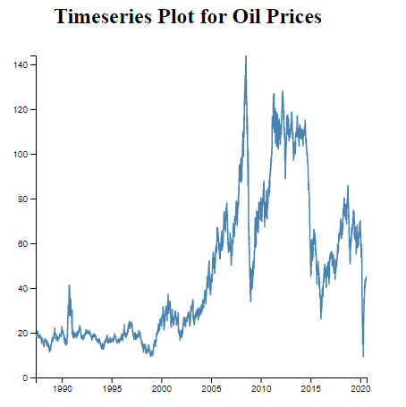
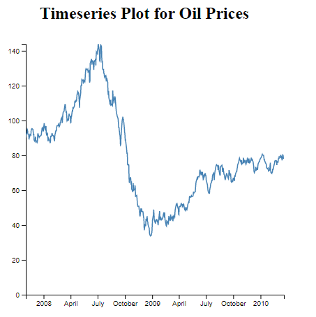

Time Series Plot for Oil Prices
About
The aim of this project is to create a time series plot to help visualize data on the prices of oil from the year 1987 to 2020.
Oil prices are subject to fluctuations and thus, it is hard to predict or tell what the next prices may be as a result of increased demand or low supply of oil.
Choice of Data
The data used for this project contains two variables; namely, the data and the prices of oil.
These two variables are enough to achieve the objectives of this project.
Since the visualization is a time-series line plot, a time series data is a perfect choice for this project.
Source of Data
The source of data is a public GitHub repository containing the data on oil prices from the year 1987 to the year 2020.
The link to the data set is GitHub's Oil Prices
Visualization Design
The choice and design of a visualization plays a critical role in ensuring the visualization achieves the objectives of the project.
The choice of the plot is a time-series line plot. A little interactivity is added to enable the users of the visualization to explore the data in depth through the visualization.
The interactivity for this project is achieved through a brush that allows the user to zoom through a desired time and explore the oil-price fluctuations.

